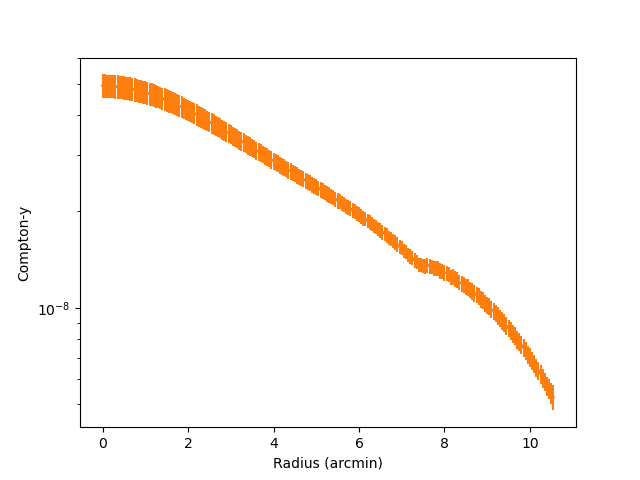
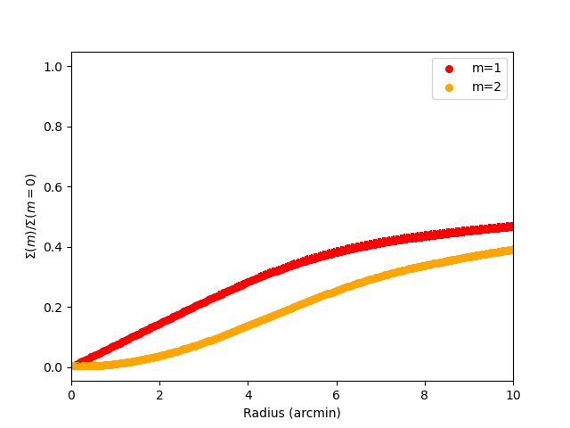
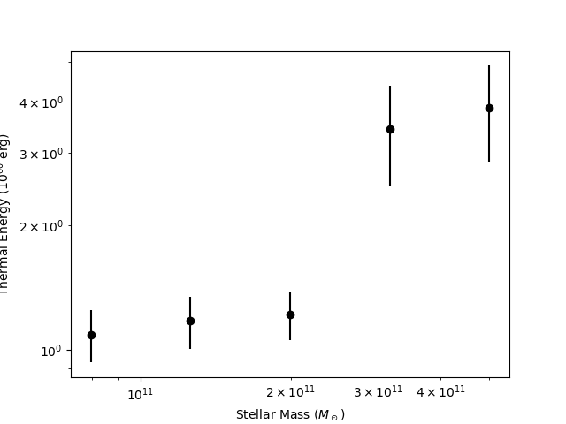
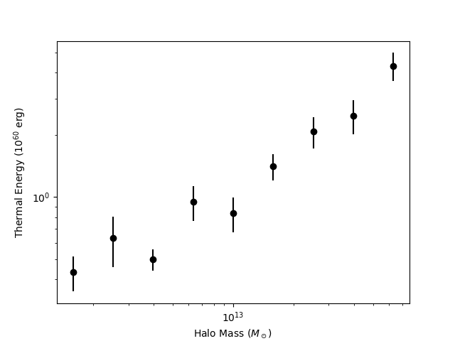

Cookbook¶
This cookbok walks through a basic end-to-end run of RAFIKI-CGM’s tSZ functionality.
Setting up the Config File¶
Copy the example config file into your directory.
cp config_example.yaml config.yaml
Set the path to where the RAFIKI-CGM data is saved and select the simulation
package_data:
path: /path/to/your/data/
sim: RAFIKI_A
Choose all three tSZ analyses:
analysis:
radial_profiles: true
moment_profiles: true
thermal_energy: true
xray: false
Select your galaxy sample using property ranges. In this example we select massive galaxies with a stellar mass greater than 1e11, and no limits on halo mass or star formation rate.
selection:
method: ranges
property_ranges:
stellar_mass_min: 1.0e11
stellar_mass_max: null
halo_mass_min: null
halo_mass_max: null
ssfr_min: null
ssfr_max: null
Select your SZ analysis parameters. In this situation we are using the z=1 snapshot, with a beam standard deviation of 2 arcminutes. For thermal energy calculations we are summing within one arcminute and stacking galaxies with the halo and stellar mass bins shown below.
sz:
redshift: 1
pixel_size_arcsec: 3
stamp_width: 15
gaussian_std: 2
thermal_energy:
aperture: 1
stellar_mass_bins: [10.7, 10.9, 11.1, 11.3, 11.5, 11.7, 14.0]
halo_mass_bins: [12, 12.2, 12.4, 12.6, 12.8, 13, 13.2, 13.4, 13.6, 13.8, 16]
Point to where you want the data to save
# Output
output:
directory: ./results/
label: rafiki_A_z1
Running the Pipeline¶
Run the pipeline from the command line
python run_pipeline.py --config config.yaml
You should see output like:
Number of selected analog galaxies: 333
Beginnning radial profile analysis...
Completed radial profile analysis.
Beginnning moment profile analysis...
Completed moment profile analysis.
Beginning thermal energy analysis...
Completed thermal energy analysis.
Finished.
Remember that the number of selected galaxies is equal to three times the actual number in the simulation box as it accounts for the three different projections.
Loading and Plotting Your Results¶
Once the pipeline has finished running you can load the output files and plot the radial profiles, moment radial profiles, and thermal energy scaling relations as below
import numpy as np
from matplotlib import pyplot as plt
import h5py
data_file = 'results/rafiki_A_z1_szdat.hdf5' #path to saved stacked radial data-should be the only thing you need to change
#-------------RADIAL PROFILES-------------#
with h5py.File(data_file, 'r') as f:
x_a = f['radial_profile/radius'][:]
y_a = f['radial_profile/compton-y'][:]
err_a = f['radial_profile/error'][:]
plt.plot(x_a,y_a)
plt.errorbar(x_a,y_a, yerr=err_a)
plt.xlabel('Radius (arcmin)')
plt.ylabel('Compton-y')
plt.yscale('log')
plt.show()
{kind=link}

#-------------MOMENT PROFILES-------------#
with h5py.File(data_file, 'r') as f:
x_a = f['moment_profiles/radius'][:]
y_a = f['moment_profiles/moment_1'][:]
err_a = f['moment_profiles/m1_error'][:]
y_b = f['moment_profiles/moment_2'][:]
err_b = f['moment_profiles/m2_error'][:]
plt.scatter(x_a, y_a,s=30,color = 'red',label = 'm=1')
plt.errorbar(x_a, y_a[0:300],yerr = err_a,color = 'red',fmt ='none')
plt.scatter(x_a, y_b[0:300],s=30,color = 'orange',label = 'm=2')
plt.errorbar(x_a, y_b[0:300],yerr = err_b,color = 'orange',fmt ='none')
plt.legend()
plt.xlim(0,10)
plt.xlabel('Radius (arcmin)')
plt.ylabel('$\Sigma(m)/\Sigma(m=0$)')
plt.show()
{kind=link}

#-------------STELLAR MASS-THERMAL ENERGY-------------#
with h5py.File(data_file, 'r') as f:
x_a = f['thermal_energy/stellar_mass'][:]
y_a = f['thermal_energy/thermal_stellar'][:]
err_a = f['thermal_energy/thermal_stellar_error'][:]
plt.scatter(x_a ,y_a, c = 'black')
plt.errorbar(x_a,y_a, yerr=err_a, fmt='none', color = 'black')
plt.yscale('log')
plt.xscale('log')
plt.xlabel('Stellar Mass ($M_\odot$)')
plt.ylabel('Thermal Energy ($10^{60}$ erg)')
plt.show()
{kind=link}

#-------------HALO MASS-THERMAL ENERGY-------------#
with h5py.File(data_file, 'r') as f:
x_a = f['thermal_energy/halo_mass'][:]
y_a = f['thermal_energy/thermal_halo'][:]
err_a = f['thermal_energy/thermal_halo_error'][:]
plt.scatter(x_a ,y_a, c = 'black')
plt.errorbar(x_a,y_a, yerr=err_a, fmt='none', color = 'black')
plt.yscale('log')
plt.xscale('log')
plt.xlabel('Halo Mass ($M_\odot$)')
plt.ylabel('Thermal Energy ($10^{60}$ erg)')
plt.show()
{kind=link}
